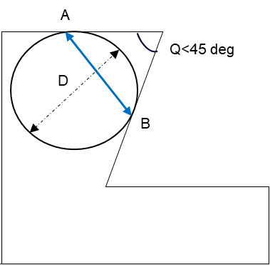

DFMProがサポートしているCreo Parametricのバージョンはどれですか？
DFMProのインストール中に、なぜ"Enable Diagnostic Data Collection for Product Improvement"がデフォルトで選択されているのですか？
DFMProを実行すれば、エラーのない設計であることを100%保証できますか？
DFMPro実行中に、本物ではない（正当でない）エラーが報告された場合、これらのエラーをどう扱えばよいですか？
複雑なパーツに対してDFMProを実行すると、かなり時間がかかります。応答時間を改善する方法はありますか？
HCL Technologies Ltd.は、当組織向けのソリューション作成を支援できますか？
eDrawingsでレポートを生成するには、別途ライセンスが必要ですか？
DFMProのインストールは、Creo Parametricのアンドゥ／リドゥ機能に影響しますか？
ネットワークライセンスのログファイルに、複数のチェックイン／チェックアウトが記録されるのはなぜですか？
DFMProが実行前にファミリインスタンスのパーツファイルの保存を促すのはなぜですか？
DFMProの新しいユーザーインターフェースは、アセンブリに対して旋削（Turning）または板金（Sheet Metal）を実行することをサポートしていますか？
同じシステムにDFMPro License Server 7.1と、v7.1より古いバージョンのDFMPro for Creo Parametricをインストールして使用できますか？
DFMProがCADパーツファイルの再保存を促すのはなぜですか？
DFMProとCreo Simulation Liveは同時に動作しますか？
抜き勾配角度関連の一部ルールで、フィレットに関する推奨事項が表示されないのはなぜですか？
DFMProはファミリーテーブルのインスタンス（パーツ／アセンブリ）で実行できますか？
DFMProは、インスタンスの推奨事項において3D PMI公差をハイライトしますか？
Cablingモジュールとそのルールのサポートは、Creo Parametricのどのバージョンから提供されていますか？
DFMProを使用中でもCADコマンドを継続して使用できますか？
Creo Parametric 7.0以降でマルチボディ機能がサポートされていますが、DFMProもマルチボディパーツをサポートしていますか？
板金ボディ1つと、ウェルドナット、プレスナット、PEMナットなどのハードウェアを含む板金マルチボディを、DFMProはサポートしていますか？
PTCがCreo Parametric 8.0以降で導入した、配置参照として"Sketched Entities"を使用して複数回作成された穴を、DFMProはサポートしていますか？
DFMPro起動時に、エラーメッセージ「Unable to open the database」が表示されるのはなぜですか？
DFMProは、板金の厚みが変化するフィーチャーを認識しますか？
DFMProの解析開始後に、パーツ／アセンブリを変更できますか？
アセンブリ解析において、DFMProは異なるフォルダに存在するコンポーネントも考慮しますか？
DFMProは、板金解析における部分穴（partial holes）を認識しますか？
DFMProは、板金解析における止まり穴（blind holes）および止まり抜き形状（blind cutouts）をサポートしていますか？
DFMProは、以下の製造プロセスに関連するルールをサポートしています：
Additive Manufacturing
Assembly
Cabling
Casting
Die Casting
Injection Molding
Investment Casting
Milling
Sand Casting
Sheet Metal
Sheet Metal Forming
Thermoforming
Tubing
Turning
Vacuum Infusion
Welding
DFMProは、以下のバージョンをサポートしています：
Creo Parametric 12.4
Creo Parametric 11.0
Creo Parametric 10.0
Creo Parametric 9.0
Creo Parametric 8.0
はい。製品の品質と性能の改善に役立てるため、DFMProの利用状況データのうち限定的なセットを収集する目的で、このチェックボックスをデフォルトで有効にしています。
ユーザーや組織に固有の機密データは収集していません。収集しているのは限定的なデータセットのみです。収集データの例を以下に示します：
Product name: 例：DFMPro for Creo Parametric
DFMPro for Creo Parametric Version
Build version: XXXX
Language: 例：US English
Event Information
Execution Information
はい。DFMProは、ユーザーごとの運用（プラクティス）の違いにより、ユーザーごとに異なる場合があります。このような状況では、DFMPro Rules Managerで該当するルールを選択して有効化することで、選択したチェックのみを実行するようにDFMProを構成できます。
はい。DFMProは、アセンブリのコンポーネントに対してDFMProルールの解析を行います。また、アセンブリ内の個々のコンポーネントを個別に解析します。解析は各コンポーネントごとに個別に実行され、統合レポートが表示されます。アセンブリ内の特定コンポーネントをDFMPro解析から除外するには、それらを抑制（suppress）してください。
ただし、DFMProはDesign for Assemblyに関連するルールもサポートしています。アセンブリを解析するには、Assemblyモジュールを選択してください。
DFMProに同梱されている標準の射出成形（Injection Molding）ルールは、アセンブリに対しては実行されません。射出成形ルールは、個々のパーツに対して実行してください。
現時点では、答えは"いいえ"となる場合があります。既存のアルゴリズムでは、例外的なケースにおいて過少報告または過大報告するツールをカバーできないことがあります。また、DFMProは常にパーツの完全なジオメトリを解析できるとは限りません。DFMProが解析できなかったジオメトリがある場合、それらはグラフィカルインターフェース上でハイライト表示されます。その後、手動で確認できます。
一部のエラーは、コンテキスト依存である可能性があります（つまり、特定の状況では、あるルール違反がエラーとして扱う必要がない場合があります）。DFMProでは、違反の該当箇所を無視（Ignore）して上書きするオプションが提供されています。また、頻繁に無視する必要があるルールについては、そのルールに設定されているパラメータが正しいか、または修正が必要かを確認することも良い運用です。
DFMProは、さまざまなルール違反を検出するためにジオメトリの詳細解析を行う必要があり、この処理は複雑なパーツでは非常に時間がかかる場合があります。すべてのルールを実行する代わりに、DFMPro Rule Managerダイアログボックスで構成を変更し、ルールを選択して実行することで、所要時間を短縮できます。
DFMProのデフォルトのルール設定は、組織で一般的に採用されているプラクティスに基づいています。DFMProはAPI（Application Programming Interface）を提供しており、デフォルトのルールセットとシームレスに実行できる独自ルールを新たに定義できます。
DFMProのプログラミングインターフェースを使用して、以下のような1つ以上の要件に合わせてDFMProをカスタマイズできます：
DFMProが提供する既存の解析エンジンを使用して新しいルールをプログラムする、または他の独自解析エンジンを統合する。フィーチャー認識エンジンはHCL Technologies Ltd.により開発され、DFMProに組み込まれています。
組織内の既存データベースや製品データ管理（PDM）システムと連携し、既存または新規ルールに必要なパラメータ情報を取得する。
現行ロジックが要件に対して不十分な場合、既存ルールを再実装する。
組織のワークフローにDFMProを統合する。
DFMProのフレームワーク技術は、その他のさまざまな要件にも対応できます。詳細については、technical supportにお問い合わせください。
はい。組織向けのカスタム／独自ソリューションを作成するサービスを喜んで提供します。HCL Technologies Ltd.の開発専門性により、ベストプラクティスを自動化したカスタムの事前設計チェックを、企業の作業環境に統合できる形で実装することが可能です。詳細は、Technical Supportにお問い合わせください。
はい。eDrawings形式でレポートを生成するには、高度なレポート生成ライセンスが必要です。
DFMProウィンドウが開いている間は、Creo Parametricのアンドゥ／リドゥ機能は無効になります。
この挙動は、Pro/Toolkit APIの制限によるものです。Creo Parametric 1.0～7.0で確認されています。
Note:
詳細の閲覧にはPTC Supportログインが必要です。次のリンクをクリックしてください： https://www.ptc.com/en/support/article?n=CS143895
この問題は、Creo Parametric 7.0.2リリースで修正されています。
複数のコンポーネントによってチェックアウトされるライセンスが必要となります。ただし、ユーザー、ホスト、およびディスプレイ（リモート接続している場合）の組み合わせに基づき、最初と最後のチェックアウト／チェックインのみが適切に考慮されます。
この挙動は、Creo Parametric v4.0 M070より古いバージョンで見られる場合があります。Creo Parametric v4.0 M070以降では修正されています。
いいえ。新しいユーザーインターフェースでは、旋削（Turning）はサポートしていません。板金（Sheet Metal）プロセスについては、Part Count Reduction - Thickness Based ルールに限りサポートしています。
はい。サーバーとDFMProアプリケーションを同じシステムにインストールできます。クライアント（ライセンス設定）を構成する際は、DFMPro for Creo Parametricのライセンスに属するDFMPro License Managerを起動してください。
パーツがCreo Parametric 4.0 F000より前のリリースで、レガシー公差（注記）を含む状態で作成されている場合、PMI関連のDFMProルールが実行された後にCreo Parametricがパーツを変更します。これらのレガシー公差（注記）は、Creo Parametric 4.0の新しい幾何公差に変換されるため、DFMPro解析の実行後にユーザーはパーツを再度保存する必要があります。なお、パーツのリビジョン番号も増加します。
このプロンプトを回避するため、ユーザーはCreo Parametricのモデルツリーからこれらのレガシー公差を変換し、DFMPro解析を実行する前にパーツを保存することを推奨します。
Toolkitライブラリの競合により、DFMProが補助アプリケーションとしてロードされている場合、Creo Simulation Liveは動作しません。この問題は、SPR 10179627としてPTC R&Dに報告されています。
詳細および回避策については、次の記事を参照してください。
Note:
この記事の閲覧にはPTC Supportログインが必要です。
フィレットは、周囲の面による支持に依存する見かけ上（cosmetic）のフィーチャーです。フィレットに関連する抜き勾配角度は、支持している面の抜き勾配に起因します。推奨事項の数を減らすため、DFMProは多くの抜き勾配角度関連ルールにおいて、支持面に対してのみ抜き勾配角度の推奨事項を表示します。
この挙動の例外となるルールの一例は、Draft angle based on height です。
CASE I:- DFMProは、パーツモデル（*.PRT）のファミリーテーブルインスタンスをサポートします。
CASE II:- DFMProは、Creo Parametricで直接開かれたアセンブリモデルのファミリーテーブルインスタンスをサポートします。
Note:
組織でconfig.supファイルを使用している場合、ファミリーテーブルインスタンスに対して解析を実行するには、“Create instances accelerator files upon instance storage”オプションを選択する必要があります。
はい。PTCのconfig.proファイルで次のオプションが有効になっている場合、DFMProは3D PMI公差をハイライト表示します。

Cablingモジュールおよびそのルールのサポートは、Creo Parametric v7.0以降のバージョンで利用できます。
DFMProの解析中は、表示（View）や表示設定（Display）に関連するCADコマンドを使用できます。ただし、CADモデルの変更または解析を伴うコマンドの使用は推奨されません。DFMProの解析が完了して結果が表示された後は、すべてのCADコマンドを継続して使用できます。
DFMProの結果は、一般的に小数点以下3桁まで表示されます。テッセレーション（三角形分割）を必要とする肉厚関連の計算では、ミリメートル単位の場合、結果は小数点以下2桁までしか表示されません。
DFMProはマルチボディパーツ設計をサポートしています。詳細は、Multibody Part Designを参照してください。
はい。DFMProは板金マルチボディをサポートしています。単一の板金ボディに対して実行されます。詳細は、Sheet Metal Moduleを参照してください。
いいえ。DFMProは、スケッチベースの参照で作成された穴をサポートしていません。パーツ上に存在する実際の穴のみを識別します。
いいえ。DFMProは軽量穴表現（lightweight hole representation）をサポートしていません。
このエラーメッセージは、次の条件で表示される可能性があります：
読み取り／書き込み権限を持つ管理者（Admin）がRule Managerを開いたままにしている場合、他のユーザーがDFMProを起動する際にエラーが表示されます。
管理者（Admin）がWindowsのスタートメニューからRule Managerを起動している場合、同じマシン上でユーザーがDFMProを起動しようとするとエラーが表示されます。
したがって、DFMProを起動する前に、Rule Managerが閉じていることを確認してください。
DFMProは、肉厚解析にSphere法を使用します。DFMProはSphere法による接触距離測定を使用します。Sphere法で算出される肉厚値は、Sphereの開始点と接触点の間の直線距離に等しくなります。詳細については次の図を参照してください。

Measured thickness is equal to the distance from A to B.
Where,
A and B = Sphere Touching Points.
Q = Angle between faces where thickness is measured and should be < 45 degrees.
面間の角度が45度以上の場合、その領域では材料流動が重要ではないため、これらの面は肉厚解析の対象になりません。これらの面はほぼ向かい合っており、材料流動に対して重要な領域を形成すると判断しました。
成形フィーチャー（例：Emboss、Extruded Forms、Extruded Holes）では、高さやコーナーR値の不均一により厚み変化が生じる場合があります。DFMProはそのようなフィーチャーを認識せず、それらのフィーチャーは未解析領域（unanalyzed regions）カテゴリに移動されます。
DFMProで解析中のパーツ／アセンブリは、解析プロセス（入力の選択）開始後は変更しないでください。選択したエンティティが変更により削除または変更される可能性があり、その結果、予測不能な結果につながるためです。結果が利用可能になった後は、DFMProが特定した設計上の問題を修正するためにモデルを変更できます。
DFMProは、解析のためにアセンブリファイルと同じフォルダに存在するコンポーネントのみを考慮します。解析に含めるため、すべてのコンポーネントが同じフォルダに配置されていることを確認してください。
DFMProは板金解析で部分穴（partial holes）をサポートしていません。これらのフィーチャーは未解析領域（unanalyzed regions）として分類されます。
現時点では、DFMProは板金解析における止まり穴（blind holes）および止まり抜き形状（blind cutouts）をサポートしていません。